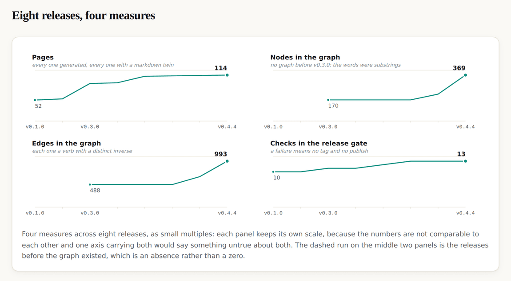
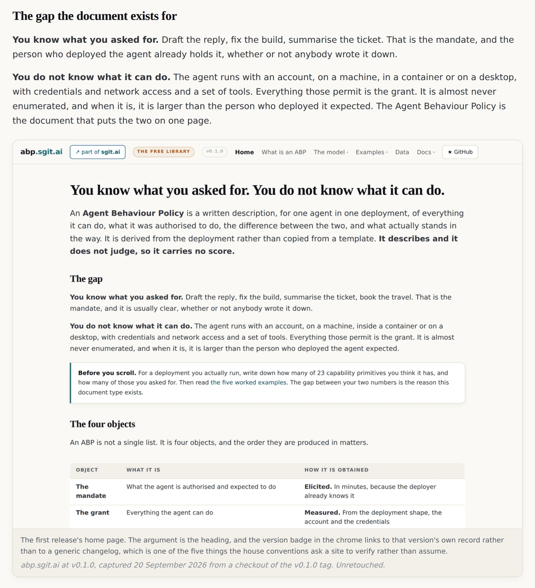
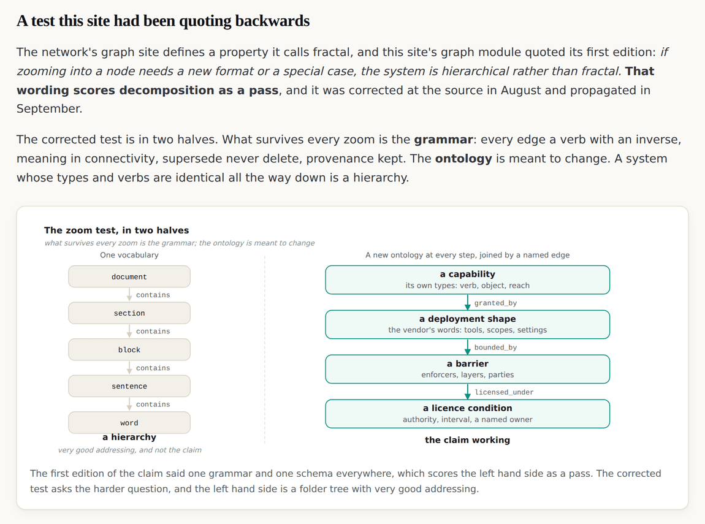

v0.5.0: The releases get one article each, and the screenshots come from the tag rather than from today's site
A release record says what changed and is deliberately terse. Nothing said why. This release adds the section you are reading, and the rule that makes it worth reading: a figure about the eleventh of September shows the site as it stood on the eleventh of September, version badge and all.
v0.5.0 tag, so it shows the site as it stood at that release and not as it stands today. Read on to v0.6.0, or back to v0.4.4.A release record is not an explanation
This site has had a version surface since its first release. Every version has a title that is a sentence rather than a label, a summary, a list of what moved and a list of what it was built against. It is deliberately terse, and it explains nothing.
That is the right shape for a record and the wrong shape for a reader who wants to know why a decision was made, what it cost, or what it failed to settle. This release adds the section you are reading: one article per release, and the article is the release.

The rule that makes the figures worth having
Every screenshot in an article was captured from the tag that article names, not from the site as it stands today. For each release tag a detached worktree produced a checkout of that exact commit, a static server served it, and a headless browser captured the named section of the named page.

What a diagram is for, and what it is not for
A screenshot shows what a reader would have seen. A diagram shows a mechanism no screenshot can: an edge, a formula, a loop, a thing that does not happen. Ten figures were written for this release, and the rule applied to each was that a figure which only repeats the sentence beside it does not get made.

Each diagram carries a described equivalent for the markdown twin, in the same form the grant-against-mandate figure has used since v0.1.0. A reader of the twin gets the figure's content in words rather than being sent to the page to find out what the picture said.
The chart had to be argued with before it could be drawn
The four measures on the index are pages, nodes, edges and checks in the release gate. They span 10 to 993, so the temptation is one chart with two y axes, and that is the single most common way a chart lies.
| The decision | Why |
|---|---|
| Small multiples, one series per panel | four scales, four panels, each with its own axis. No panel implies a comparison the numbers do not support |
| No label on the top gridline | it sits at the maximum, the maximum is the last value in every panel, and the last value is already labelled at the dot. The same number twice is a reconciliation the reader does for nothing |
| A dashed run before v0.3.0 on two panels | there was no graph before that release. Plotting zero would claim the graph existed and was empty, which is a different and untrue statement |
| The two colours were validated, not chosen | the house teal failed the chroma floor and reads as grey. It was snapped to the nearest step that passes the lightness band, the chroma floor, colour vision separation, the normal vision floor and contrast against both surfaces |
| No text inside a bar fill | white on either segment is under contrast for small text, and an interior segment has no free end to put a label beside. The legend carries the values |
The gate caught two things in this release's own work
The articles are held to every rule the rest of the site is: no score, no adjective about a named product, pure ASCII, the same forbidden words. Writing them tripped the gate twice.
$ node admin/build/validate.js
validate: 4 error(s)
x figtest.html: no canonical link
x figtest.md is a page in the tree and is not listed in llms.txt
x admin/build/figures.py:515: non-ASCII "a" (U+430) outside the declared
glyph set
A scratch file used to preview a figure had been copied into the repository, and a Cyrillic character had reached a diagram through a careless edit. Neither is interesting on its own. What is interesting is that a site about what a control is could not publish a page that broke its own rules, which is the only honest demonstration of a control there is.
What this release does not do
- It does not restate the model. Where an article describes a rule it links to the page that owns it, and where the two disagree the model page is right and the article needs correcting.
- It adds no data and no formula. The chart counts what the tags already held; the articles explain releases that had already shipped.
- It does not make the site's argument twice. An article is about a release, not about the Agent Behaviour Policy. The argument lives on the model pages.
One article per release · The version surface · v0.5.0's own release record